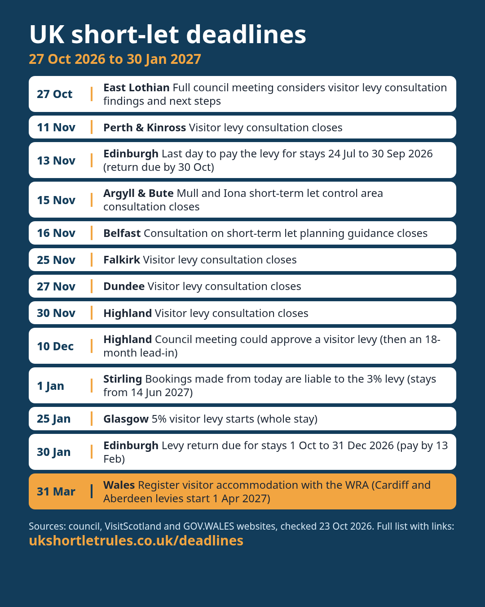

UK short-let deadlines: next 90 days
Every UK short-term let date we track from late October 2026 to the end of January 2027: levy start dates, payment deadlines, consultations closing and council decisions. Each date re-checked against its official source on 23 Oct 2026.

Download the card (PNG) to share. Please link back to this page.

| Date | Where | What | Official source |
|---|---|---|---|
| Tue 27 Oct 2026 | East Lothian Scotland | Full council meeting considers visitor levy consultation findings and next steps | source |
| Wed 11 Nov 2026 | Perth & Kinross Scotland | Visitor levy consultation closes | source |
| Fri 13 Nov 2026 | Edinburgh Scotland | Last day to pay the levy for stays 24 Jul to 30 Sep 2026 (return due by 30 Oct) | source |
| Sun 15 Nov 2026 | Argyll & Bute Scotland | Mull and Iona short-term let control area consultation closes | source |
| Mon 16 Nov 2026 | Belfast Northern Ireland | Consultation on short-term let planning guidance closes | source |
| Wed 25 Nov 2026 | Falkirk Scotland | Visitor levy consultation closes | source |
| Fri 27 Nov 2026 | Dundee Scotland | Visitor levy consultation closes | source |
| Mon 30 Nov 2026 | Highland Scotland | Visitor levy consultation closes | source |
| Thu 10 Dec 2026 | Highland Scotland | Council meeting could approve a visitor levy (then an 18-month lead-in) | source |
| Fri 1 Jan 2027 | Stirling Scotland | Bookings made from today are liable to the 3% levy (stays from 14 Jun 2027) | source |
| Mon 25 Jan 2027 | Glasgow Scotland | 5% visitor levy starts (whole stay) | source |
| Sat 30 Jan 2027 | Edinburgh Scotland | Levy return due for stays 1 Oct to 31 Dec 2026 (pay by 13 Feb) | source |
Looking further ahead
| Date | Where | What | Official source |
|---|---|---|---|
| Wed 31 Mar 2027 | All of Wales Wales | Register your visitor accommodation with the Welsh Revenue Authority | source |
| Thu 1 Apr 2027 | Cardiff and Aberdeen Wales / Scotland | Visitor levies start | source |
Dates can move. Check the source before acting, and see the changes log for updates.